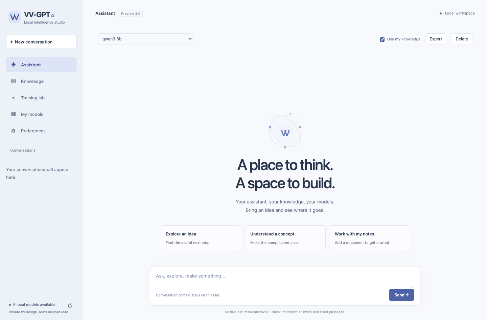

Inspected 17 November 2026 · Xavier’s local checkout, GitHub, desktop launcher, and saved models
You built an end-to-end local language-model laboratory: the neural network, data processing, training loop, inference, checkpoints, live dashboard, and Mac launch experience. The strongest successor keeps that laboratory and gives it a capable pretrained assistant alongside it.
A working first version now exists. VV-GPT4 is an isolated local alpha in /Users/xavier/AI/T3-code/vv-gpt4. It connects six already-installed local Ollama models, adds persistent conversations and cited document retrieval, and replaces the fragile training lifecycle. It does not modify the original VV-GPT3 project.
All four repositories were found through your authenticated GitHub account. The desktop app launches /Users/xavier/AI/hermes-workspace/vv-gpt3/VV_GPT3.command. That checkout is clean and its HEAD matches GitHub at 802d1a8. The latest GitHub smoke workflow succeeded, and the existing suite passed all 31 tests locally.
There is real ML engineering here: a decoder-only Transformer with causal attention, learned positions, pre-layer normalization, GELU feed-forward blocks, tied token/output embeddings, AdamW, warmup and cosine learning-rate decay, gradient clipping, BPE tokenization, and MPS support. Training is next-token prediction on your data. No OpenAI model or cloud API supplies these scratch-model weights.
The application layer is also substantial: upload → tokenize → train/validate → save best/latest/final → list models → generate. Real-time telemetry and model histories make it possible to inspect learning rather than just run a script. The improved launcher waits for the right server and handles busy ports.
Important lineage finding: GitHub’s model-code blob and data-loader blob are identical between VV-GPT2 and VV-GPT3. Version 3 mainly improved the application around the same learning engine. That is useful progress, but it explains why a nicer or safer release did not automatically make the model much smarter.
The current models folder contains three model families, each with final/best/latest files: nine checkpoints using about 3.8 GB. These are real locally trained artifacts. The figures below come from saved sidecar metadata, not newly repeated training experiments.
| Model | Parameters* | Dataset tokens | Best validation loss | Saved best step | Recorded run time |
|---|---|---|---|---|---|
| chat 2 | 51.0M | 1,424,331 | 2.305 | 1,050 | 41.9 min |
| chat | 29.9M | 1,424,331 | 2.287 | 1,900 | 77.6 min |
| shakespeare-small-v1 | 29.9M | 381,335 | 4.013 | 850 | 5.1 min |
*The original counter excludes learned positional embeddings. Losses across different datasets are not directly comparable. These runs do not establish factual accuracy, general reasoning, or instruction-following ability.
Saved historical observations after the first five evaluations; x-axis is evaluation order because old logs do not store every exact step. Training falls while validation fluctuates and ends above its best score. This is evidence consistent with overfitting. The old validation evaluator randomly resampled batches, so individual ups and downs are noisy.
The chat run reached its best recorded validation score at step 1,900, but continued to a recorded completed-iteration value of 3,674. chat 2 reached its best at 1,050 and continued to 1,556. The slightly larger model did not produce a better best recorded score in these runs. This is not a controlled model-size experiment, but it contradicts any assumption that “larger” automatically means “better.”
A fresh read-only sample from the original Shakespeare best checkpoint produced recognizable theatrical syntax and fragments. That demonstrates learned style; the output was not consistently coherent. No private chat corpus was imported into the new assistant or sent to a cloud service.
best_checkpoint = checkpoint retains a live state dictionary whose tensors share storage with the training model. Later updates change those tensors. When the final file is saved, its old “best” step/loss can accompany newer weights. SHA-256 comparisons of tensor names and bytes show that all three final files differ from their best checkpoint. The Shakespeare final weights exactly match the latest weights, while still claiming the earlier best step and score.
Use the existing _best.pt files when judging the original models. VV-GPT4 reads those explicitly, saves best weights immediately, and never holds a live state dictionary as a historical snapshot.
The original web worker calls torch.load without an explicit compatibility strategy. With installed PyTorch 2.8, the default restricted load rejects the legacy config dataclass. Loading the saved latest checkpoint this way raised UnpicklingError. The original catch block logs “Starting fresh,” which is a dangerous outcome for something labelled resume. VV-GPT4 uses plain configuration dictionaries for new checkpoints, restores optimizer/RNG state, verifies the dataset/configuration, and fails explicitly when it cannot resume.
VV-GPT3 keeps browser history in localStorage, but /chat_api passes only the latest message to generate_response. The existing model does not see the visible conversation. The WhatsApp formatting branch depends on a property that is not set during loading, and the raw model has no instruction-tuning stage. VV-GPT4’s pretrained assistant receives recent complete exchanges and explicitly saved preferences.
Your chat dataset contains about 1.42 million tokens. A randomly initialized 30–51 million-parameter model can learn its patterns and recurring style, but this is very different from the broad pretraining and instruction tuning behind an everyday assistant. Increasing iterations reuses the same evidence. Increasing model size adds capacity without supplying missing knowledge.
GPT-2’s 50,257-token vocabulary also makes embeddings a large fraction of the smallest presets: roughly 7.24 million of the Nano model’s 8 million counted parameters. A smaller tokenizer is a worthwhile scratch-training experiment; it would not make a tiny corpus equivalent to broad pretraining.
The old app keeps one global training dictionary and event list in memory and starts a daemon thread. Jobs and history are lost on a process exit. The start check is not an atomic reservation. Hyperparameter conversion is not complete range validation. The overfitting warning needs a particular sequence of increases and does not actually stop training. The CLI and web training loops also diverge. VV-GPT4 consolidates its new training loop in a separate worker with persisted jobs, an atomic single-job reservation, explicit controls, and patience-based early stopping.
VV-GPT3’s sidecar registry and confined paths are real improvements; the old inherited deep-dive document describes some issues those changes already fixed. However, chat still uses unrestricted checkpoint loading, state-changing HTTP routes lack the new token/origin guard, and template CDN assets weaken “fully offline” claims. Its displayed token-rate estimate counts whitespace-delimited words, not actual generated tokens. VV-GPT4 uses engine-reported assistant token counts, offline assets, confined legacy selection, and restricted checkpoint loading.
Useful intelligence immediately from installed pretrained models. Persistent conversations, streamed answers, explicit preferences, and local reference documents with inspectable citations.
Start with qwen3:8b for responsiveness. Your machine also has qwen3.6:35b-a3b, qwen3-coder:30b, devstral-small-2, and two Gemma 4 variants. They are selectable; they have not all been benchmarked by this audit.
Your own models remain first-class. Train from scratch, inspect real loss curves, stop/resume, keep a trustworthy best checkpoint, and generate from both new experiments and preserved VV-GPT3 models.
Next, add measured adapter fine-tuning so a broadly capable model can learn a particular style or task without relearning all language from scratch.
The verified machine is an Apple M1 Max with 64 GiB unified memory. That is a useful local inference and experimentation platform. It does not remove memory limits: larger weights, context caches, and simultaneous training all consume the same shared capacity.
The new implementation deliberately keeps Python for the ML work and uses a small offline HTML/CSS/JavaScript interface. SQLite records conversations, knowledge, runs, and metrics. Ollama is behind a narrow local provider boundary. This delivers a working successor without adding a frontend build system or packaging layer before the core behaviour is reliable.
qwen3:8b retrieval test answered the date with [1], then answered the pronoun-based budget follow-up correctly with [1]. The recorded warm checks generated 18 and 14 tokens at 46.8 and 47.2 tokens/second. This is a narrow smoke check, not a general benchmark or a guaranteed speed.
This is a local alpha. No GitHub publication or hosted deployment has been performed.
Build a small evaluation set from the jobs you actually want: useful coding, explaining coursework concepts, answering questions from project files, planning, and following constraints. Record accuracy, groundedness, latency, peak memory, and failure examples. Compare the already-installed small and larger models on the same questions. Select defaults by observed trade-offs rather than version numbers.
Add PDF extraction with page references, document deduplication, per-project libraries, local embeddings, hybrid retrieval and reranking. Preserve source versions and show exactly why a passage was selected. Retain the ability to say “the documents do not contain that answer.” Build a context budget around each model’s actual tokenizer instead of the alpha’s character limits.
Add an MLX-LM adapter-training track on Apple Silicon, starting with a compatible small instruction model. Keep base-model weights unchanged and train separate adapters on curated, consented examples. Use correct role formatting and completion masks. Evaluate against the unmodified base on held-out tasks and broader regression prompts. Personal style is a tuning task; changing facts belongs in retrieval. Verify model licenses and memory requirements for the specific chosen model before implementation.
Add opt-in project-folder reading, a calculator and bounded code execution, followed by web research and explicit action approval. Each tool needs timeouts, cancellation, an execution record, and a clear boundary between retrieved text and instructions. Add voice and images only when the selected local model/runtime supports them and quality has been measured. The current release does not execute shell commands or browse on behalf of the assistant.
Add document-level train/validation/test splits, duplicate and leakage checks, tokenizer experiments, run comparisons, memory estimates, and reproducible datasets. Explore RoPE, RMSNorm, SwiGLU and grouped-query attention in a separate model family with parity tests. These are educational and efficiency improvements; none substitutes for adequate training data or instruction tuning.
GitHub provenance: HomeMade GPT, Mac port, VV-GPT2, VV-GPT3. Current-source anchors: Transformer, inference, web training/checkpoint lifecycle, sidecar registry, preflight heuristic.
Machine-readable evidence: checkpoint hashes and saved histories, GitHub file identity comparison, real inference/training smoke results, end-to-end interface checks. Scripts in scripts/ reproduce these checks without writing to the source project.
No independent validation set was collected for the old models, and their private chat outputs were not assessed for general intelligence. The initial alpha has lexical retrieval, raw-text training, bounded context and a localhost development server. PDF/semantic search, adapter fine-tuning, voice, vision, autonomous tools, authentication for sharing, and a signed native application remain future work. Existing conversations store retrieved excerpts; removing a document does not erase those past excerpts.